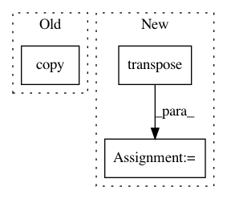

1f3da600c20e3376b0bb396bba482b1e90b7883c,i3nception_tf.py,,,#,34
Before Change
filter_idx = 5
py_out = py_to_tf_reshape(
out3d.data.numpy())[0][0][:, :, filter_idx].copy()
tf_out = tf_out3dsample[0][0][:, :, filter_idx].copy()
import pdb
pdb.set_trace()
max_v = max(tf_out.max(), py_out.max())
min_v = min(tf_out.min(), py_out.min())
After Change
// Get output
tf_out3dsample = sess.run(rgb_logits, feed_dict=feed_dict)
out_tf_np = tf_out3dsample.transpose((0, 4, 1, 2, 3))
out_tf = torch.from_numpy(out_tf_np)
unit_name_tf = "RGB/inception_i3d/Conv3d_1a_7x7/"
In pattern: SUPERPATTERN
Frequency: 3
Non-data size: 3
Instances
Project Name: hassony2/kinetics_i3d_pytorch
Commit Name: 1f3da600c20e3376b0bb396bba482b1e90b7883c
Time: 2017-11-24
Author: yana.hasson@inria.fr
File Name: i3nception_tf.py
Class Name:
Method Name:
Project Name: IBM/adversarial-robustness-toolbox
Commit Name: 832054b98a7158a8aba01be314355ba0a0696814
Time: 2021-02-25
Author: ebube.chuba@ibm.com
File Name: art/attacks/poisoning/perturbations/image_perturbations.py
Class Name:
Method Name: insert_image
Project Name: utkuozbulak/pytorch-cnn-visualizations
Commit Name: 3df2eaf74d8f2299ca05e3e98cab5bf89dafc249
Time: 2017-10-24
Author: utku.ozbulak@gmail.com
File Name: cnn_visualisation.py
Class Name:
Method Name: preprocess_image